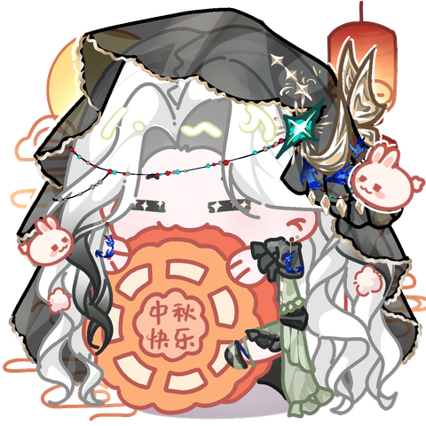

LIMITED-TIME EVENT / 限时活动
🌕 2026 Mid-Autumn Festival / 中秋节 🌕
Pacific Time (PT)
以美国太平洋时间为准
Celebrate Mid-Autumn Festival with a special limited-time mascot :) Please take note of the event time window above as certain perks are only available during the event.
中秋节来啦：） 活动期间会有限定Q版山竹登场！请务必注意活动时间 - 部分机制只在活动期间生效。

General Usage Guidelines / 一般使用说明
During the event period, both followers and subscribers can use the 2026 Mid-Autumn mascot. After the event, ONLY subscribers who have permanently unlocked the mascot during the event can continue to use it. Followers, as well as subscribers who did not unlock the mascot during the event will lose access.
活动期间， 关注者和订阅者都可以使用 2026 中秋限定Q版山竹。 活动结束后，只有在活动期间解锁限定版山竹的订阅者可以继续使用限定版山竹。关注者，以及 在活动期间没有解锁限定版山竹的订阅者将无法在活动后继续使用限定版山竹。
You can check your current available mascots with the command below. 大家可以使用下面的指令来查看自己目前可以使用的Q版山竹。
!setmascotTo set the Mid-Autumn mascot as your preferred mascot, specify the mascot ID in the command. 使用下面的指令把中秋版山竹设置为你想使用的Q版。
!setmascot midautumn_2026You can also keep your mascot selection random, and wait for RNG to select the Mid-Autumn mascot. But note that it may end up costing you more channel points (mangosteens). 你也可以把Q版山竹设为随机，然后等RNG替你选出中秋版山竹。但是这样的话很可能会增加你的频道点数（mangosteens）的消耗。
!setmascot randomAfter setting your preferred mascot, redeem one of the two Channel Rewards: Mascot Summon or Mascot Messenger to use your selected mascot.
设置完成后，兑换召唤Q版山竹或Q版山竹传话 频道奖励即可使用当前选择的Q版山竹。
Subscriber Bonus / 订阅特典
Add Mascot to Permanent Festival Collection / 永久解锁限定版山竹
Subscribers can permanently add the 2026 Mid-Autumn mascot to their Festival Collection. Simply use the 2026 Mid-Autumn mascot with Mascot Summon or Mascot Messenger (Channel Reward) at least once while subscribed during the event.
订阅者可以将 2026 中秋版Q版山竹永久加入自己的节日收藏。 在活动期间保持订阅状态，并使用中秋吉祥物完成至少一次 召唤Q版山竹 或 Q版山竹传话 频道奖励即可。
A confirmation message will appear in chat when the unlock succeeds. 成功解锁后，聊天室会发送一条确认消息。
After unlock, you can check your updated collection with the setmascot command. 解锁后可以用setmascot指令来确认你的收藏。
!setmascotImportant / 特别注意
Bamboo is doing her best to code and test the festival mascot behavior carefully, but please understand that this is my side project and errors may occur. If the mascot behaves unexpectedly because of Bamboo's implementation, Bamboo will make sure to make up for it.
山竹会尽量写好代码和测试，但是因为这个毕竟是山竹的业余项目，如果出现错误的话还请大家谅解。 如果因为山竹的原因Q版山竹出现了预期外的状况，山竹会负责想办法补偿大家的。
⚠️ Don't Miss the Event Window! / 请注意活动时间！
After the event ends, temporary access to the Mid-Autumn mascot will be disabled. Only subscribers who unlocked the mascot for their permanent Festival Collection during the event will retain it in their collection. Festival mascots are not guaranteed to return in future events, so make sure to unlock it during the event window if you want to keep it!
活动结束后，中秋版Q版山竹的限时使用权限会关闭。 只有在活动期间成功将它加入永久节日收藏的订阅者， 才会继续把它保留在自己的收藏中。 节日吉祥物 不保证未来会再次返场， 所以如果想收藏的话，记得在活动期间完成解锁！
Note: Festival Collection mascots are permanent unlocks, but can only be used while you have an active subscription .
注意： 节日收藏中的吉祥物为永久解锁， 但 只有在当前处于订阅状态时才可以使用 。
More special streams and events will be added here.
更多特别直播及活动会在这里更新。